Par Motor › Historia del motor › SEAT
Historia del motorSEAT: la historia completa
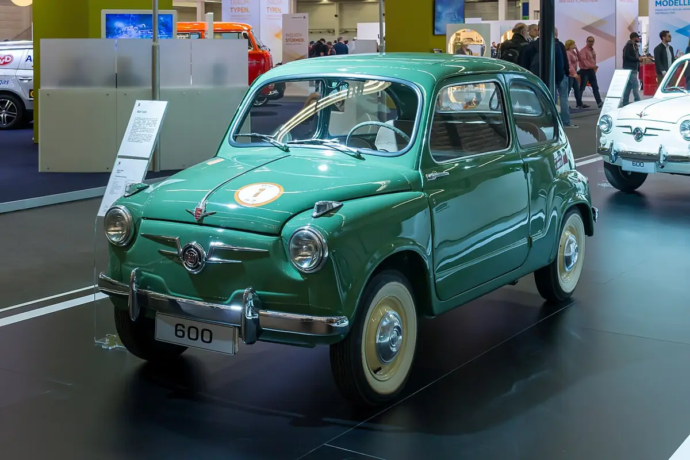
Este es el SEAT 600. Para muchas familias españolas, su primer coche.
Detrás de él hay una marca nacida en una fábrica de Barcelona hace más de setenta años.
Una marca que empezó copiando a Fiat, se separó de ella, se unió a Volkswagen, llevó motores con la firma de Porsche… y acabó creando otra marca: Cupra.
Esta es la historia completa de SEAT.
1950 · S · e · a · t
En 1950 nace la Sociedad Española de Automóviles de Turismo. Sus iniciales: S, E, A, T.
La empresa la crean el Estado, a través del Instituto Nacional de Industria, varios bancos españoles… y Fiat, que aporta la licencia para fabricar sus coches.
La España de entonces apenas tiene coches. La mayoría de la gente se mueve en tren, en autobús, en moto o andando.
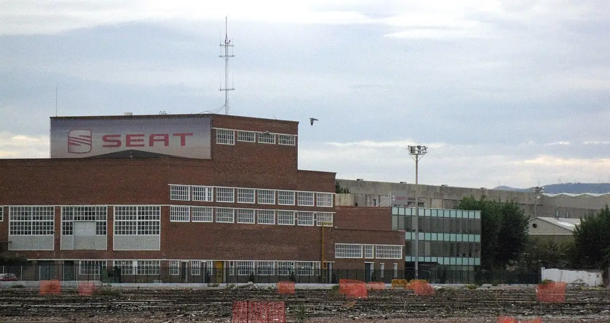
La fábrica se levanta en la Zona Franca de Barcelona.
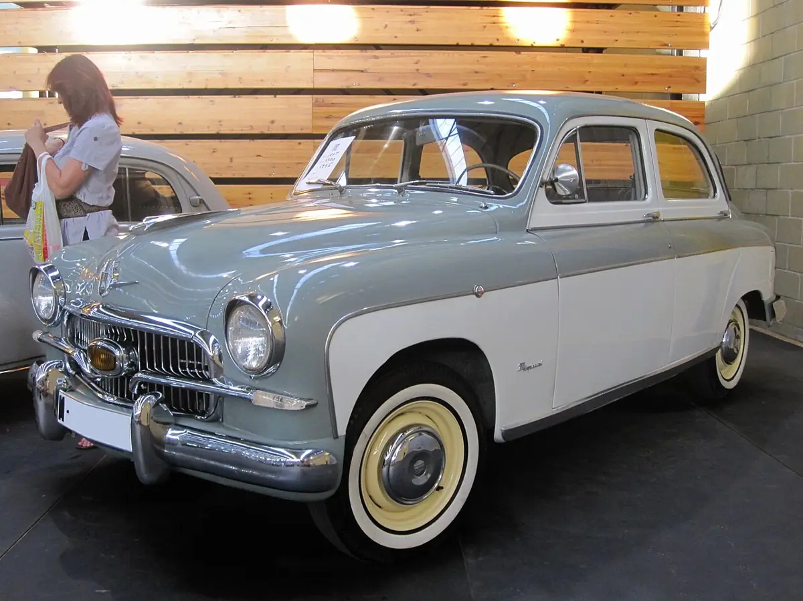
Y en 1953 sale de allí el primer SEAT: el 1400. Un coche grande y caro, al alcance de muy pocos.
Para hacerse una idea: costaba muchísimo más de lo que ganaba un trabajador en un año entero.
Seat 600
Todo cambia en 1957 con el SEAT 600. Pequeño, con motor trasero y, sobre todo, asequible.
Se convierte en el símbolo de una época: la del desarrollismo, cuando España empieza a crecer y muchas familias se compran su primer coche.
La demanda es tan grande que hay listas de espera de meses para conseguir uno. Y quien lo tiene, lo cuida como un tesoro.
Con él llegan las primeras vacaciones en coche, las maletas en la baca y los viajes de cientos de kilómetros a sesenta por hora.
Hasta 1973 se fabrican cerca de ochocientos mil.
Seguramente alguien en tu familia tuvo uno. Si es así, cuéntanoslo en los comentarios.
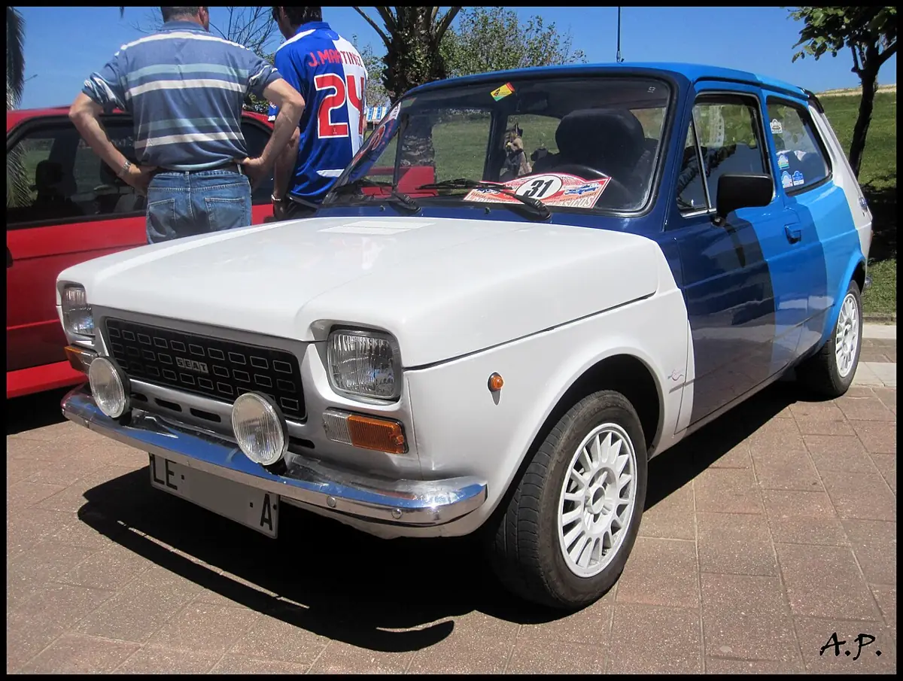
Seat 127 · 1972
Durante los sesenta y setenta, SEAT fabrica sobre todo versiones de modelos Fiat: el 850, el 124, el 127…
Y se convierte en el fabricante que más coches vende en España.
Pero a finales de los setenta llega la crisis. Las ventas caen, la empresa pierde dinero y Fiat decide marcharse.
En 1982, Fiat y SEAT rompen definitivamente.
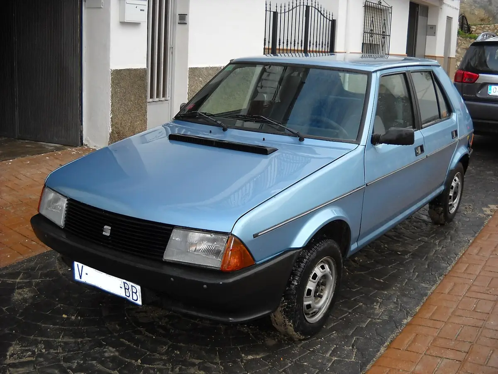
SEAT Ronda
SEAT tiene que demostrar que puede ir sola. Su primer modelo de esta etapa es el Ronda, muy parecido al Fiat Ritmo.
Tan parecido que Fiat lo lleva a los tribunales. SEAT llega a enseñar en público un Ronda con las piezas diferentes pintadas de otro color, para demostrar los cambios.
Al final, la justicia da la razón a SEAT. El Ronda puede seguir vendiéndose.

Y en 1984 llega su gran apuesta: el Ibiza.
Lo diseña Giorgetto Giugiaro, colabora la alemana Karmann… y los motores se desarrollan con ayuda de Porsche: los famosos «System Porsche».
El Ibiza funciona muy bien, en España y fuera. Y demuestra que SEAT puede hacer sus propios coches.
1986 · Llega volkswagen
En 1986, el grupo Volkswagen compra la mayoría de SEAT. Y pocos años después, la compañía entera.
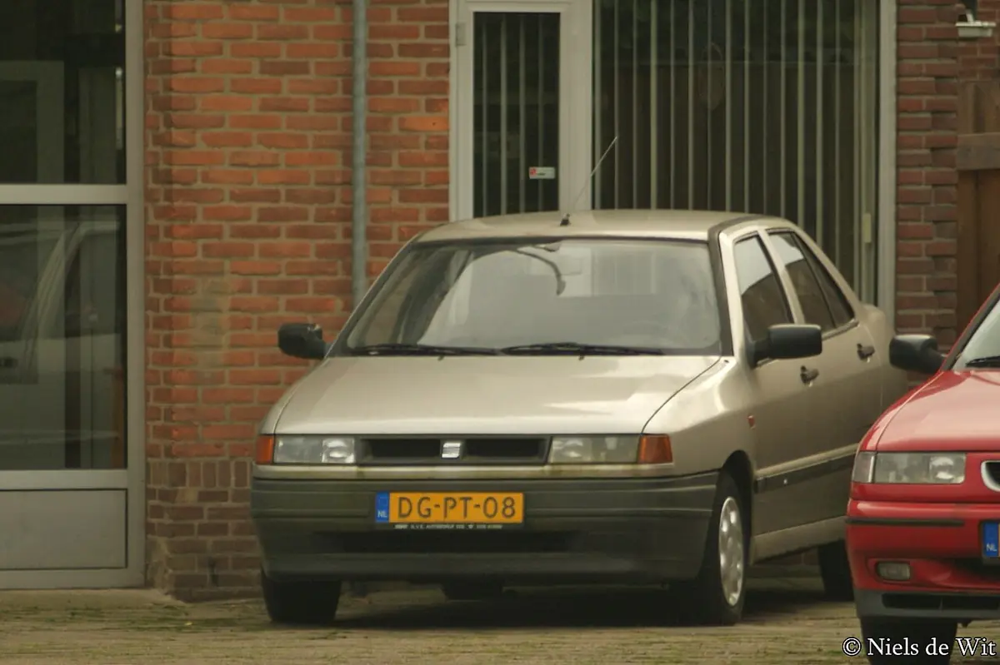
Con Volkswagen llegan nuevos modelos, como el Toledo, en 1991.
Y en 1992, SEAT es el coche oficial de los Juegos Olímpicos de Barcelona.
Para una empresa nacida en Barcelona, aquellos Juegos fueron un escaparate ante todo el mundo.
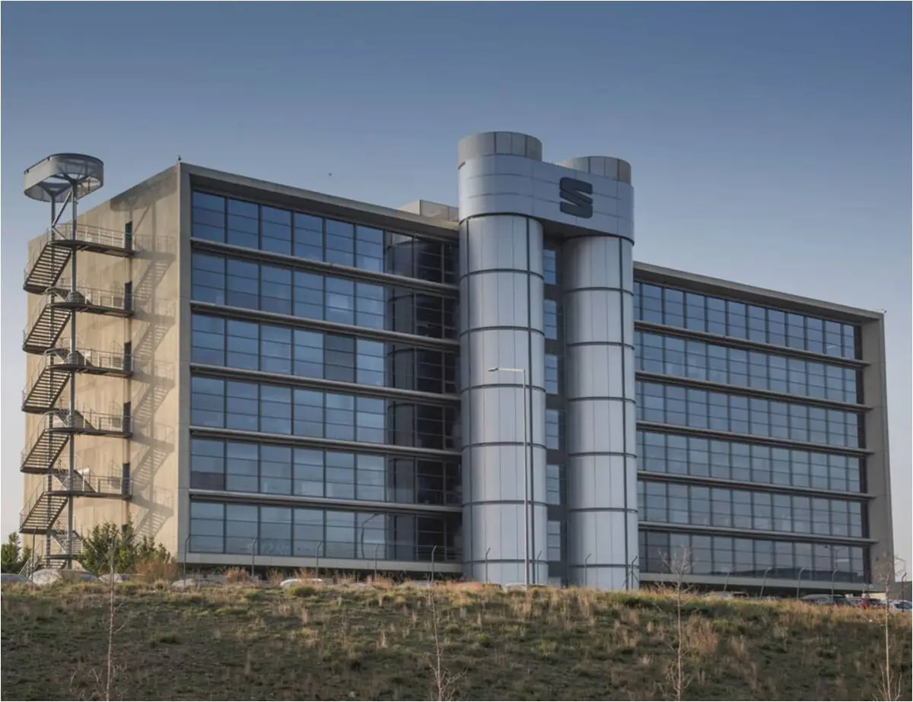
En 1993 se inaugura la nueva fábrica de Martorell, una de las más modernas de Europa. Allí se fabrican todavía hoy.
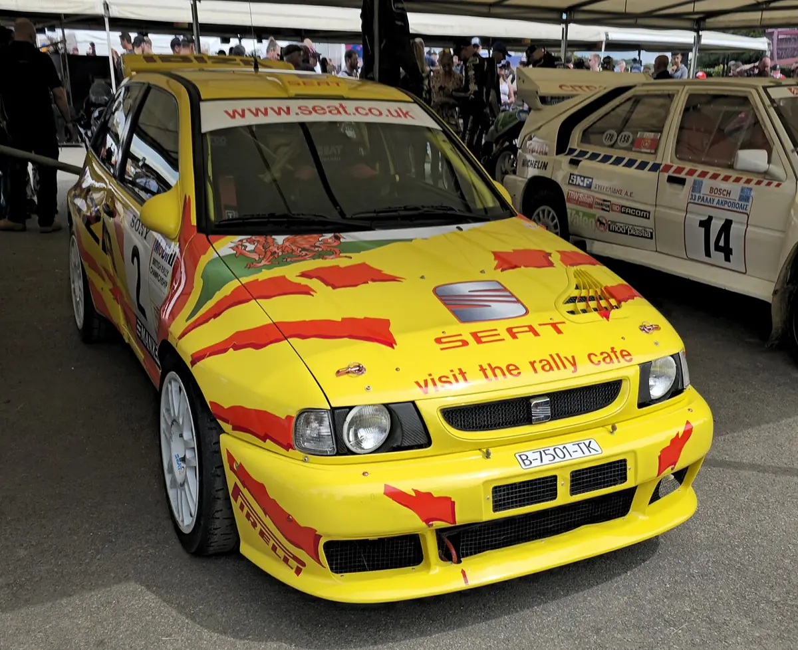
En los rallies, el Ibiza Kit Car gana tres años seguidos la Copa del Mundo de dos litros, de 1996 a 1998.
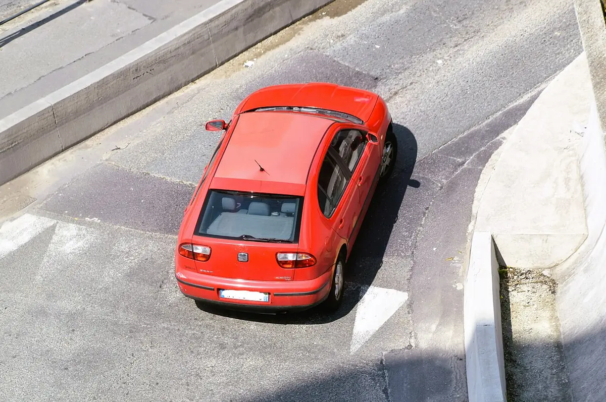
Y en 1999 nace el León, que con los años se convertirá en uno de los modelos más importantes de la marca.
Más tarde, en 2016, llega el Ateca, el primer SUV de la marca. Después vendrán el Arona y el Tarraco, todos con nombres de lugares de España.
Cupra = cup racing
Por el camino aparece una palabra en algunas versiones deportivas: Cupra. Viene de Cup Racing, carreras de copa.
Y en 2018, Cupra se convierte en una marca propia, separada de SEAT.
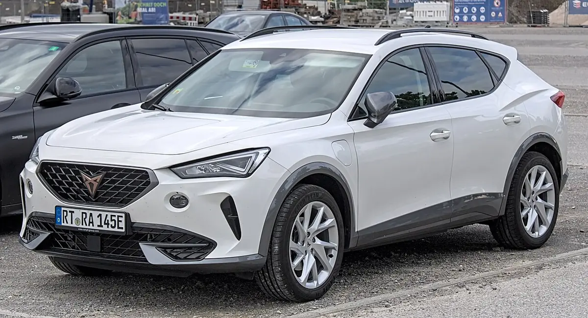
Su primer modelo exclusivo, el Formentor, es un éxito de ventas.
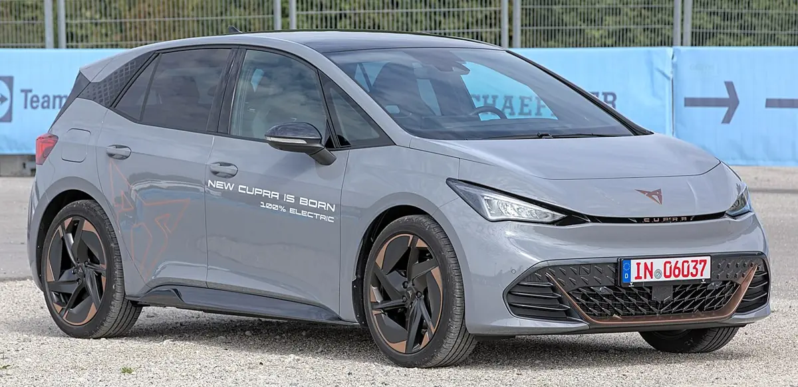
Y con el Born llega su primer coche cien por cien eléctrico.
Lo que empezó como un apellido para las versiones más rápidas de SEAT se ha convertido en una marca con vida propia.
Hoy SEAT y Cupra siguen fabricando en Martorell y forman parte del grupo Volkswagen.
Del 600 a cupra
Así que, del 600 que puso a España sobre ruedas a una marca deportiva y eléctrica, SEAT ha recorrido un camino muy largo.
Y ahora, te pregunto a ti: ¿cuál es el SEAT más importante de la historia? ¿El 600, el Ibiza o el León?
Más curiosidades de SEAT
¿Cuánto vale hoy un SEAT?
Consulta el precio justo de segunda mano de cualquier modelo, año por año, con el tasador gratis de Par Motor.
Ver precios por modelo →